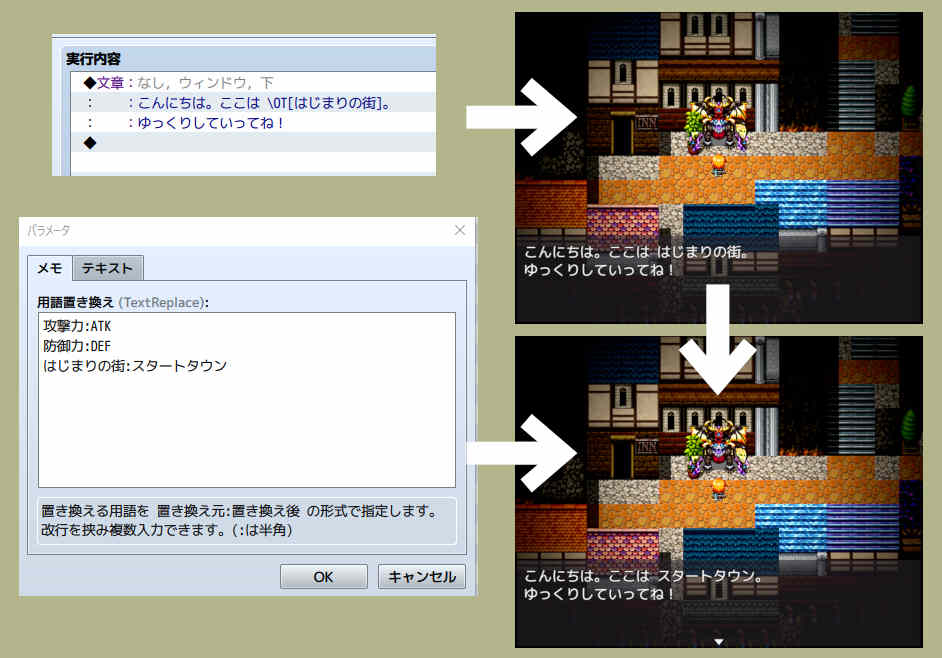

//=============================================================================
// NAPI_OriginalTextEscape.js
//=============================================================================
// Copyright (c) 2021 napiiey
// Released under the MIT license
// https://opensource.org/licenses/mit-license.php
//-----------------------------------------------------------------------------
// version
// 0.1.0 2021/10/03 公開
//-----------------------------------------------------------------------------
// Twitter: @napiiey
//-----------------------------------------------------------------------------
/*:
* @plugindesc 独自用語制御文字追加プラグイン (MV)
* @author なぴぃ
*
* @help 後から変更できる独自用語を制御文字で入力できるようにします。

*
* ●使い方
* \OT[独自用語] の形式で文章の表示やヘルプ等の文章内に記述します。
*
* 例) この武器の\OT[攻撃力]は30。
*
* このままだと「この武器の攻撃力は30。」と表示されます。
* 後で変更の必要が出てきたものだけプラグインパラメーターに
* 変更前:変更後 の形式で記述します。
*
* 例)攻撃力:ATK
*
* これで「この武器のATKは30。」という表示に変わります。
*
*
* ●短縮記述
* \]独自用語 の形式の短縮記述でも同じ事ができます。
*
* 例) この武器の\]攻撃力 は30。
*
* 独自用語の後には必ずスペースを入れる必要があります。（半角でも全角でもOK）
* こちらの場合用語に[]の記号が利用できるようになる変わりに
* スペースが利用できなくなります。
* 用語に応じて使い分ける事ができます。
*
* また、制御文字の競合が起こった場合競合している方を
* プラグインパラメーターで無効にする事ができます。
*
*
* ●他の方法と比べたメリット
* ・自由な名前で書けるため変数を用語辞典として利用するのと比べて可読性が高い。
* ・他の場所に用語集を事前準備する必要がなく、変更の必要が出たものだけ
* 後から置き換えられる。
* ・セーブデータ容量を圧迫しない。
*
*
* ●ご利用について
* 本プラグインはMITライセンスの下で公開しています。
* MITライセンスの内容に従ってご利用下さい。
* https://napiiey.github.io/plugins/license.html
*